Penn State DMD 400 Capstone · Fall 2025
Freedom From Hunger
Give Montgomery County’s annual Freedom From Hunger food drive a dedicated website where people could donate, understand the campaign’s impact, and find ways to participate.
I led the project from research and UX through visual design, front-end development, and usability testing. I worked with VFTCB and the MontCo Anti-Hunger Network to shape the content and campaign requirements.
A live campaign microsite with preset donation amounts, a progress tracker, participating business features, and resources for sharing the campaign. The experience supports individual giving and business participation while keeping the purpose of the drive visible throughout.
- Fall 2025
- Figma
- HTML, CSS & JavaScript
- Usability testing
The problem
Giving the campaign a home
Freedom From Hunger brings together local businesses and residents to support the MontCo Anti-Hunger Network. The campaign had information and promotional materials, but no dedicated website connecting the different ways to help. I wanted people to find the campaign, understand it, and act without piecing that information together themselves.
The goal
Making participation easier
The site needed to serve people ready to donate, businesses considering participation, and visitors learning about the campaign for the first time. I organized the experience around those needs, with clear actions supported by information about the cause and the community behind it.
Understanding what
people needed
I reviewed nonprofit campaign websites, audited the existing materials, and developed personas, empathy maps, and journey maps for four user groups. The research helped me identify what visitors might need before taking action and where the site could reduce uncertainty.
Explain where the support goes
Make the beneficiary and the campaign’s purpose easy to find, especially near donation decisions.
Show the local connection
Feature participating businesses and community involvement so visitors can recognize the people and places supporting the drive.
Keep the next step clear
Use straightforward calls to action and short paths to donating or becoming a partner.
Make progress visible
Show the campaign’s goal and current totals so visitors can understand what has been contributed and what remains.
Connect the figures to people
Use sourced information and community perspectives to explain why the campaign matters.
Designing for different reasons to visit
The four personas helped me consider different motivations, questions, and levels of familiarity with the campaign. I used them to review whether the site gave each audience a useful route to participation.
Choose a persona to explore their goals, concerns, and path through the site.
Organizing the path to participation
I mapped the content before designing the pages, then revised the structure after an advisor check-in. Donation options appear early, while campaign context, progress, business participation, and resources support people who need more information.
Switch between versions to see how the content developed.
Rather than confining the mission to one section, I placed statistics and quotes throughout the page. That keeps the reason for giving connected to the actions visitors can take.
Designing a trustworthy
progress tracker
I researched progress indicators and campaign deadlines before designing the tracker. I wanted it to communicate momentum while accurately representing the campaign’s position. The final approach uses verified totals, a visible goal, and context explaining how the contributions translate into food.
Move the slider to explore the tracker’s different stages.
The tracker should reflect confirmed campaign totals. Any pledges included need to represent genuine commitments.
Countdowns should connect to actual campaign dates so visitors understand what the deadline represents.
The tracker presents impact in pounds of food, with the campaign’s dollar-to-food conversion nearby.
A headline figure gives visitors a quick overview, with supporting information available for those who want more detail.
Protecting the people
behind the cause
A colleague at VFTCB emphasized protecting the dignity of people experiencing food insecurity. That guidance shaped the photography, storytelling, and information I chose to feature.
Choose imagery with care
I used food, donated goods, and hands giving or receiving. The imagery communicates participation without identifying the people receiving support.
Tell the story respectfully
We decided against identifiable testimonial videos. Sourced statistics and vetted anonymous quotes communicate the need while respecting privacy.
Keep the mission present
Facts and quotes appear between sections, connecting donations and business participation to the purpose of the campaign.
Finding the right
visual tone
I explored three style tiles, ten type pairings, and greyscale layouts before developing two complete visual directions. I wanted the site to feel credible, welcoming, and connected to VFTCB’s existing campaign identity.
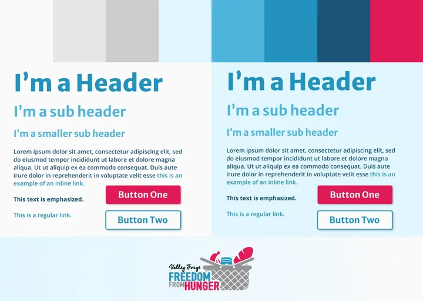
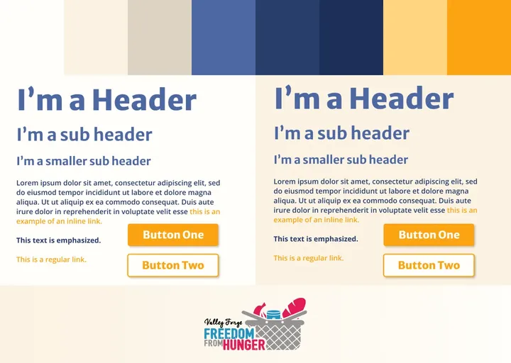
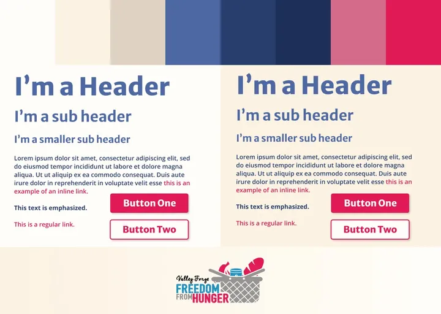
- Give todayEvery $1 provides 12 lbs of food.Playfair Display / Lato
- Give todayEvery $1 provides 12 lbs of food.Roboto Slab / Roboto
- Give todayEvery $1 provides 12 lbs of food.Poppins / Source Sans 3
- Give todayEvery $1 provides 12 lbs of food.Nunito / Atkinson Hyperlegible
- Give todayEvery $1 provides 12 lbs of food.Merriweather Sans / Open Sans
- Give todayEvery $1 provides 12 lbs of food.Oswald / Raleway
- Give todayEvery $1 provides 12 lbs of food.Cabin / Noto Serif
- Give todayEvery $1 provides 12 lbs of food.Montserrat / Karla
- Give todayEvery $1 provides 12 lbs of food.PT Serif / PT Sans
- Give todayEvery $1 provides 12 lbs of food.Josefin Sans / Libre Franklin
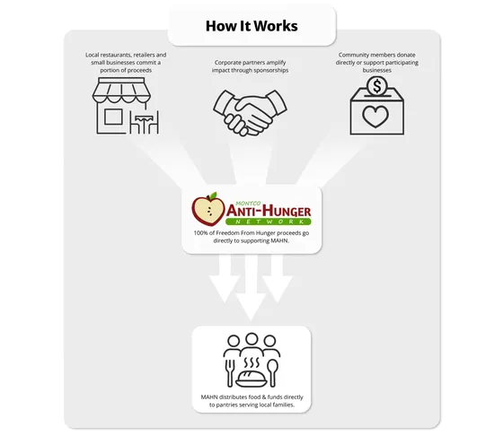
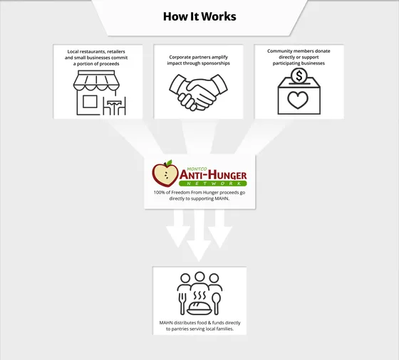
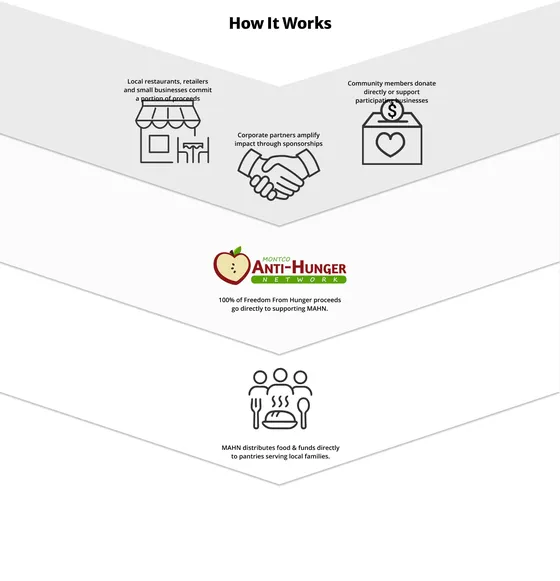
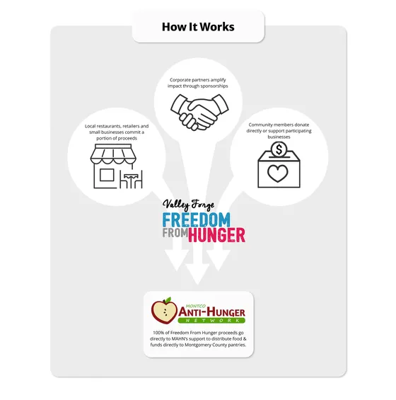
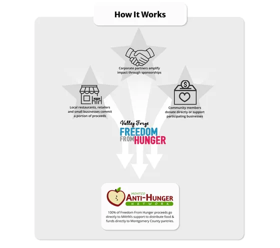
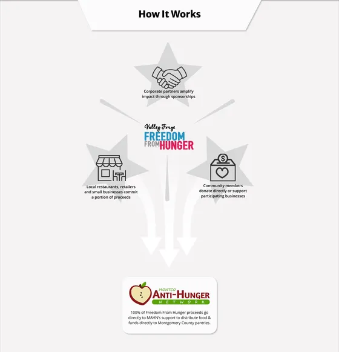
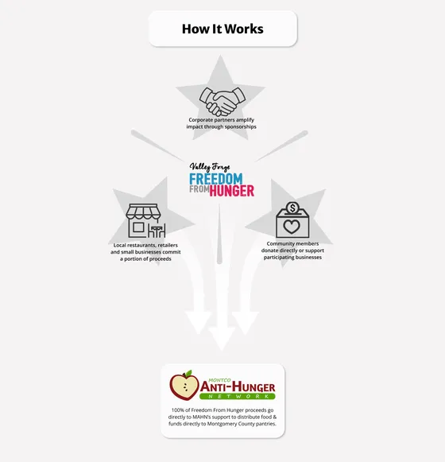
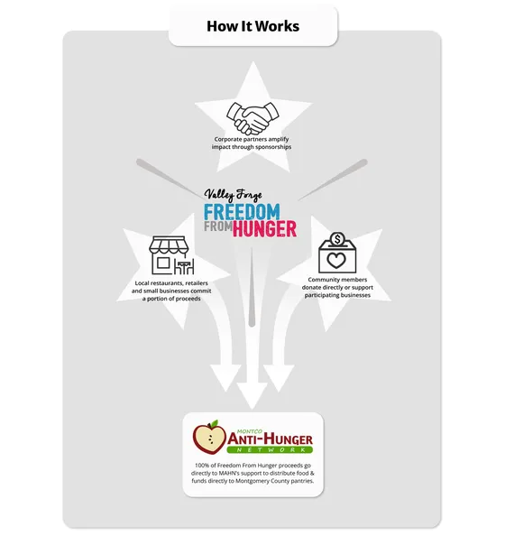
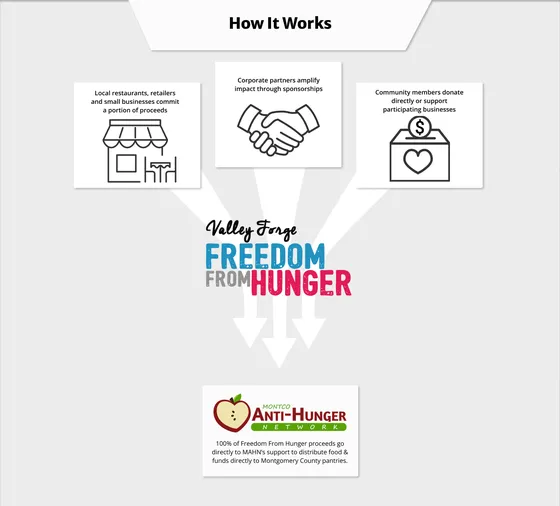
Try 1 of 9
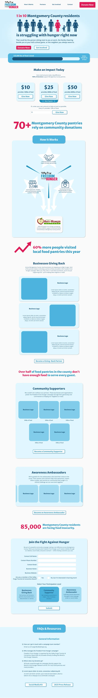
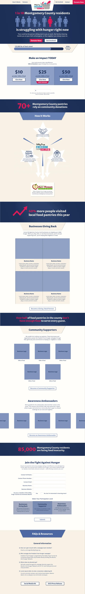
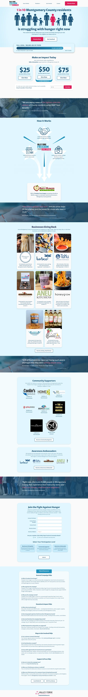
Testing the experience
before development
Ten participants tested the desktop and mobile Figma prototypes using a self-guided testing kit and survey. I asked about navigation, readability, layout, and their understanding of the campaign. The feedback helped identify where the experience was clear and where it needed work.
Participants responded positively to the desktop navigation, layout, donation-button visibility, and explanation of the campaign. Several also highlighted the hero.
Mobile tap targets and motivation to act received the weakest scores. Participants also identified specific obstacles that I could address in the build.
- Desktop navigation was extremely easy10 of 10
- Layout and spacing worked on desktop10 of 10
- Donate buttons were visible without much scrolling10 of 10
- The site clearly explained the campaign10 of 10
- Mobile navigation was extremely easy9 of 10
- Statistics felt impactful9 of 10
- No section needed excessive scrolling or zooming9 of 10
- Graphics and donation cards were clear on mobile8 of 10
- Text contrast was easy to read8 of 10
- Mobile buttons were big enough to tap without errors6 of 10
- Felt motivated to take action6 of 10
What workedWhat needed attention
- The floating donation button covered mobile contentMoved the donation action into the header
- The mobile menu stayed open after selectionMade it close when a destination was selected
- The business section moved too quicklyRefined the carousel’s pace and controls
- Donation reassurance was needed at the point of givingRepeated that donations go directly to MAHN inside the donation modal
- Participants wanted more evidence of past impactIdentified past campaign totals as useful supporting content
- People expected the share control to workCompleted the sharing flow during development
Testing also showed me where the prototype itself needed to be more complete. An unfinished share action interrupted the experience people expected to follow.
Bringing the campaign
into the browser
I built the site with HTML, CSS, and vanilla JavaScript, deploying through GitHub and Netlify. I reviewed each section for responsive behavior and accessibility as the build developed.
Choose a section to jump to that part of the live-site recording.
Refining the details that support action
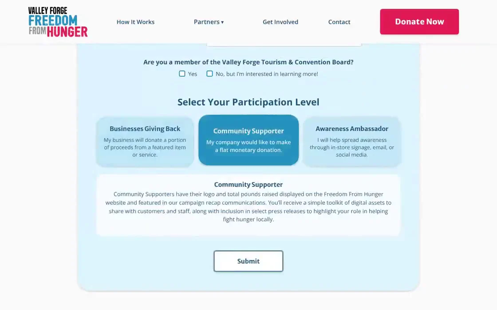
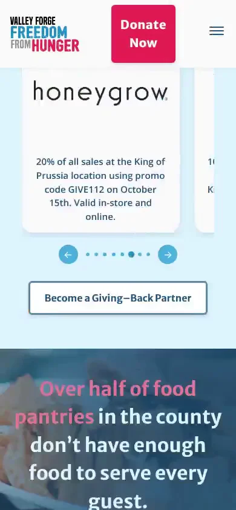
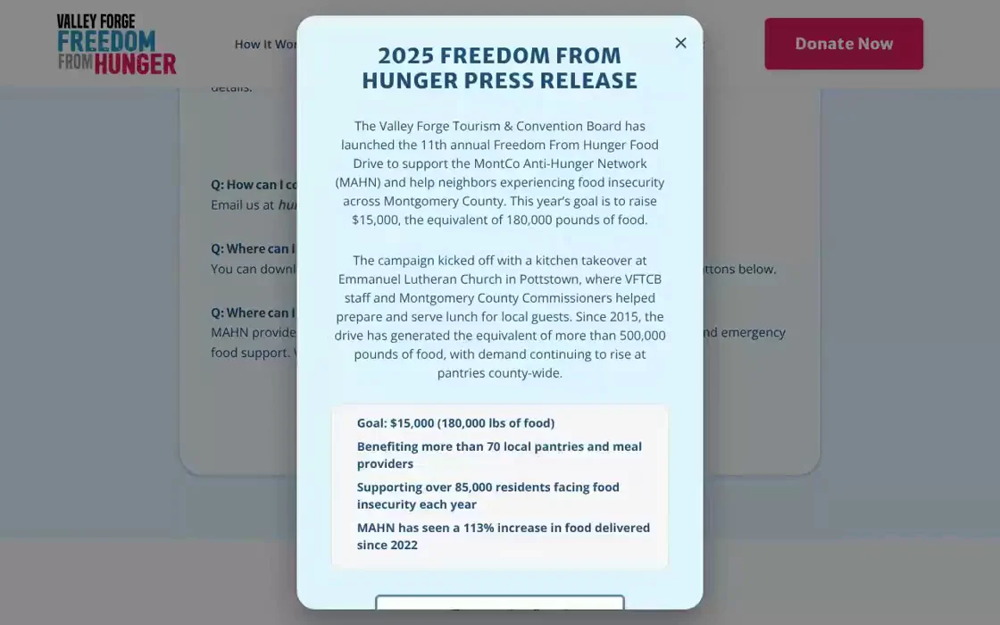
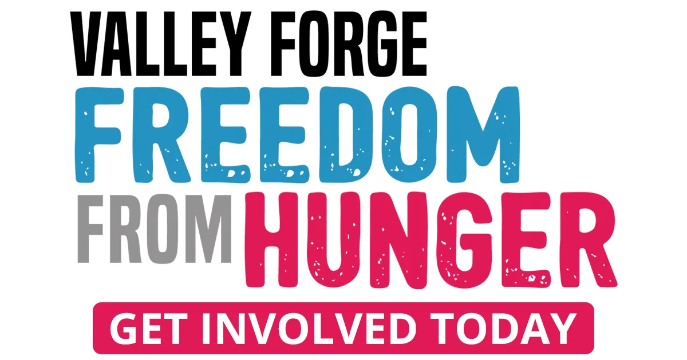
Freedom From Hunger – Make an Impact in Montgomery County, PAfreedomfromhunger.netlify.app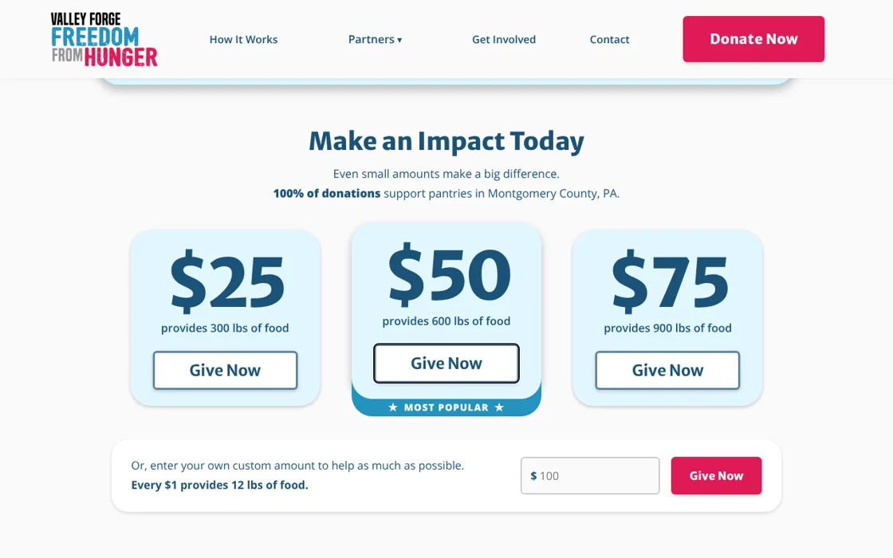
Detail 1 of 5
Last Chance Getaways
A luxury travel site with a catch. The more you browse, the more the climate crisis shows through.
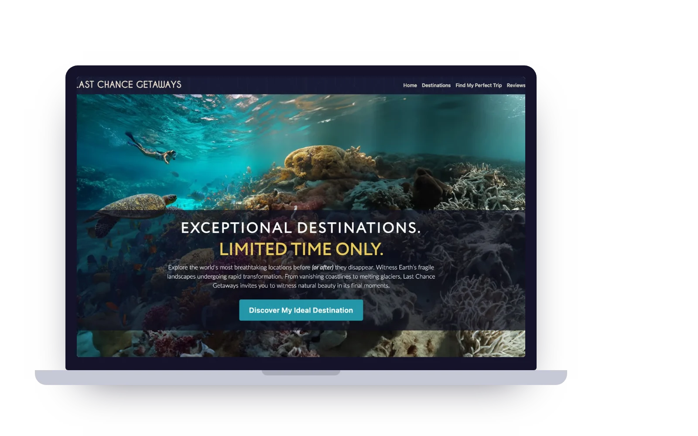
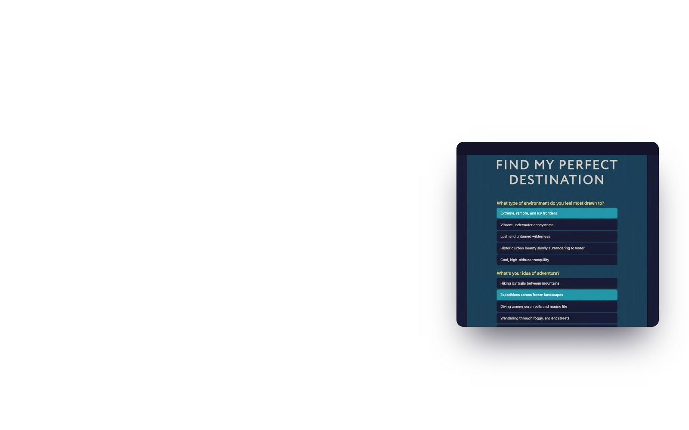